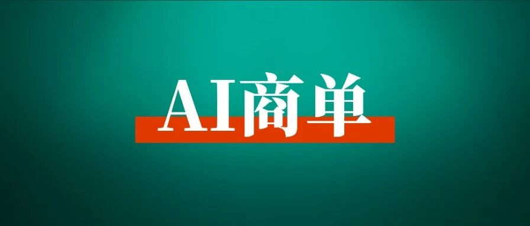

一个月3亿广告费，普通人靠接商单赶上AI新风口
以下文章来源于瑞琦和杨昌 ，作者内向的杨昌
瑞琦和杨昌分享好东西的地方
👆点击 生财有术 > 点击右上角“···” > 设为星标🌟
“做小红书几个月，接到单条近万元AI商单；一个月六七条，接广接到手软...”
AI自媒体新风口到来，普通人能不能从中分到一杯羹？
上市公司AI应用专家@杨昌 通过AI公司投流方向，分析出更容易接广的自媒体赛道，希望帮助你更好找准定位，得到AI“金主们”的青睐。

大家好，我是杨昌，最近一年多，我都在影视公司里负责AI的应用落地，在AI促进个人发展方面也有很多实践。
10月还没结束时，部分国产AI就在投流上杀疯了。
钛媒体报道说：“截至10月29日，kimi智能助手、字节跳动豆包、腾讯元宝等所有 AI 应用10月全网广告投放（投流）支出超过3亿元人民币。”

想必大家在忍不住为国产AI们烧钱捏了把汗的同时，也会留意到到一个小的机会点：
在巨量的投放金额之下，部分AI自媒体已接满了商单，成为本轮AI浪潮中少数真正赚到钱的AI创业者。
这让人不由得想起硅谷王川的一条微博。

那么，现在做AI自媒体还有机会吗？如果有的话，该如何切入呢？
带着这样的问题，一位亿级投手（我对象瑞琦）拉上一个上市公司AI应用专家（我），开启了我们的调研。
Part 1
调研情况
在一周多的时间里，我们逐条点开了12家国产AI在3大平台的150多条素材和广告。
不仅从头看到尾，还仔细阅读了多条用户的评论。
最终，我们初步总结出了AI自媒体接商单的“掘金密码”，以及做内容的“流量密码”。
不同于市面上很多的“AI自媒体”教程，大多会把重点放在找对标账号上面。
我们更倾向于认为，“AI自媒体”与其说是ToC的流量生意，不如说是ToB的接商单生意。
因此，前面提到的两类密码，主要藏在了这5组问题里：

Part 2
掘金密码
牌桌上都是谁在投广告？
国产AI广告主构成
上半年开始，陆续有媒体报道国产AI们的营销战。
在主流媒体的报道中，Kimi和豆包是主要的玩家，智谱在线下的广告也非常亮眼。
但整个投流战场上，真的只有他们“三国争霸”吗？
当然不是，PR可能会夸大，但投出去的真金白银不会说谎。通过App Growing，我们把访问量top50的国产AI全部搜了一遍，最终选出12家值得关注的玩家：

（数据来源：截至10月20日，AppGrowing平台估算，仅供参考）
AI自媒体潜在“金主”
看完各家的投放金额和变化情况，我们就可以初步得出，谁才是AI自媒体们潜在的“金主”。
比如排名第一的月之暗面，10月投放金额之大，已经超过后4家之和。一位接过 kimi 家广告的AI自媒体透漏，文章发出后半小时内，就能收到款项。
豆包是出价最高的广告主，但10月在信息流上的消耗正在骤减，这可能会影响到后续的AI自媒体投放。
更多的蛛丝马迹，我们还要在国产AI们的投放渠道和素材中找寻。
12家公司的投放细节
第一档：亿元俱乐部玩家，共两家

从信息流渠道来看，Kimi主攻渠道已经不是我们印象中的B站信息流，而是字节系的穿山甲；豆包在持续投抖音信息的基础上，也增加了B站信息流的狙击。
从KOL种草渠道来看，豆包率先拿下了多个千万粉和百万粉的抖音大号；Kimi也开始密集合作 B 站热门榜里的UP，合作完的作品也有多部继续上过热门。
由此可见，接这两家广告的大号，已有“神仙打架”之势。当然，小号也不是没有生存空间，比如小红书上仍然有一席之地。
第二档：百万、千万俱乐部，共有8家

别看内容繁多，一句话就可以简单总结：
2024年的国产AI，更像是披上AI外皮的教培
虽然各家主打功能和目标用户都有所侧重，但教育始终是各产品的重点布局方向：
上至耄耋之年的爷爷奶奶，下到牙牙学语的早教儿童；大学生是兵家必争的群体，老师也成了多家重点争取的对象。
但与此同时，零零散散聚焦职场或副业的“生产力”广告，却很难取得较好的反馈。偶尔有反馈不错的博主，则是把重点放在了汇报沟通上，而非提效本身。
为什么会这样呢？
基于一年多的AI应用和推广经验，我们认为是因为国产AI的智能欠佳，尚不能成为足够稳定可靠的提效工具。
因此，现阶段国产AI 真正的甜蜜用户，是所谓的“求上岸”且时间充裕人群：
比如K12阶段，击中家长的点，仍然是解放家长，让孩子自己去学；大学阶段，考研、考公和找实习，才是大学生们普遍关注的问题；而对于已上岸的老师，快速完成PPT 的背后，更多是职称等方面的进步需求。
第三档：其他玩家

讯飞和千问这两家，虽然在C端基本上没怎么参战，但在B端也有一定的布局。
至于百川、零一、DeepSeek等更多玩家，目前公开可查的投放金额相对有限，就不展开赘述了。
基于前面对现状的分析，我们试着梳理了3个投放趋势，仅供参考，也期待后续一起验证：
今后投放趋势预测
哪里有“求上岸”，哪里就有增量人群
无论是付费投放，还是免费做内容，本质上都是做用户增长。而现阶段增长得动的用户，仍然是“求上岸”人群。
究其原因，是因为有非常多的人“没有上岸”。只有他们才有足够多的空闲时间去备战，顺便匀出一定时间去用 AI 提效。
所以，如果要用一幅图来概括，那就是祁同伟的这个名场面。

行文至此，突然想到一个好笑的事情：调研之初，我们曾误认为，国产AI们主要投的，是AI资讯号、AI测评号或AI教程号。
但一圈看下来却发现，在B站、小红书等主流渠道上接到商单最多的，反而是各垂直领域的账号，而且号越大越垂越好。
比如，考研的学姐、带娃的宝妈、精通汇报的HR和解读经典的UP主等等……
口播已死，应用永生
之前的半年，在数亿消耗的狂轰乱炸之下，我们或多或少刷到过一些“水内容”的口播视频。
但从上个季度开始，将AI 应用到工作流当中去的内容，越发成为各家投放的主流。
这里面的佼佼者，应该是月之暗面。我们留意到，他们近期在跟热门榜UP 合作的视频中，已经将用Kimi 分析视频中某个小观点的场景，丝滑地植入到视频当中去了。
为什么月暗能把 AI应用做这么好呢？除了产品本身能打之外，“垂直领域实习生”或许也是秘密武器之一：

虽然这则JD是产品部门，但kimi的投放正是以产品功能为基础，不少该岗位实习生已成功转正。
因此，我们有理由相信，后续无论是注重投放的国产AI，还是关心转化质量的AI自媒体，都会陆续尝试类似的方式。
投流之外，流量洼地是关键。
瑞琦说，在线教育投放的经验告诉她，投流大战只会导致越投越贵，高性价比渠道将会是国产AI用增部门不变的追求；
互联网金融的投放经验教会她，最高性价比的测渠道思路之一，就是紧盯各类竞品、快速行动。
纵观12家国产AI，在测渠道方面做得最好仍然是kimi：
信息流方面，早在上个季度，豆包在投的字节系他们在投，元宝在投的广点通他们也在投，智谱和百度文库在投的小米画报他们也投过，
连Minimax 在投的网易他们都在投。
至于KOL 种草，B站、小红书和公众号等主流渠道，都有大量投放。

（数据来源：截至10月20日，AppGrowing平台估算，仅供参考）
国产AI们，肯定已经开始了盯紧对方的流量洼地。建议“AI自媒体们”也可以适当关注，享受一段时间流量蓝海的红利。
Part 3
流量密码
聊完掘金密码，相信各位对“AI自媒体”如何定位才能更好接广告，已经有了较为清晰的想法。
那么接下来，我们就拆解4条堪称是“流量圣体”的小红书脚本，一起来看看对甲方有交代的“流量密码”是什么：
普通大学生如何利用AI逆袭
学习逆袭类，已知流量最高AI广告帖，点赞27万9，颜值等元素拉满。


竞赛信息差类：元素有限情况下，已知流量最高AI广告帖，点赞17万4。


普通职场人如何利用AI提效
职场汇报类：职场AI自媒体天花板账号，接过几乎所有国产AI 广告


副业搞钱类：已知副业类广告天花板，但评论讨论 AI 的不多


小结：自有高手在民间
以上4则小红书帖子的流量之所以如此之高，是因为他们都套用了自己过往数据最好帖子的模板——那是被他们反复验证过有效的模板。
所以，从国产AI投流的角度，不妨先多跟“流量圣体型”博主共创，等测试出好效果之后，再拿去投流，或将事半功倍。
而从AI自媒体的角度，优先把“流量圣体”们的优质内容模板作为对标，及时应用到自己的作品当中去，也能更快取得正反馈。
更多KOL投放相关数据，可以参考新榜旗下海汇提供的数据，重点拉取了近3个月国内15家头部AI产品在抖音、快手、B站、小红书、视频号、微博等6个平台的投放内容数量以及具体投放内容。

Part 4
最后的话
AI六小龙中，陆续有两家联系过我们投广告；小红书“科技薯”的运营，也专门从即刻把我邀请进“科技薯的朋友圈”官方群，发到群里的帖子也会有流量扶持。
但在调研之前，我们一直没太把AI自媒体当回事，就没好好运营起来。如今完成调研，虽说挂一漏万，也基本了解了甲方的情况和乙方的机会。
我们俩一致认为，本轮机会最大的玩家，首先是国产AI 的投放部门（甲方），其次是“求上岸”相关细分领域的头部博主，最后是擅长流量的MCN 类组织（如生财的超级标孵化器）。
虽然很多跟我一样不擅长流量的普通人，可能在“AI 自媒体”这一波机会中，不一定能分到一杯羹。
但我也强烈建议大家，注册一个账号玩一玩。就算不能挣到多少钱，但趁着平台有红利，在输出和互动的过程中，真正把 AI 用起来，那也是非常有价值的。

如果看完本文后，还想了解更多关于AI的干货。
不妨看看我们为你准备的这份《AI丨2024 年生财十大赛道机会》礼包，里面涵盖了AI自媒体、AI代写、AI绘画等各类的玩法，希望对你有所帮助。


解锁方式：
生财圈友，私信鱼丸关键词【AI】。